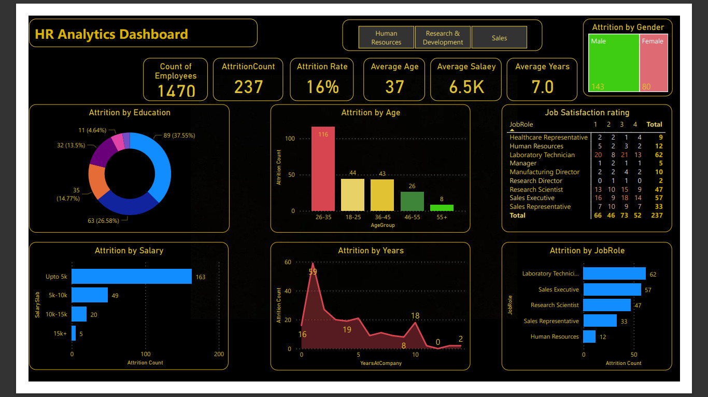
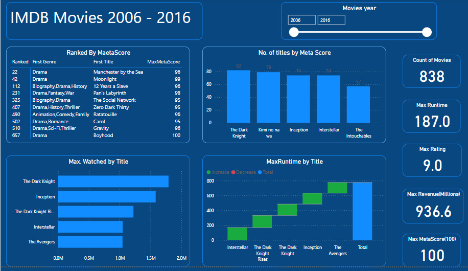
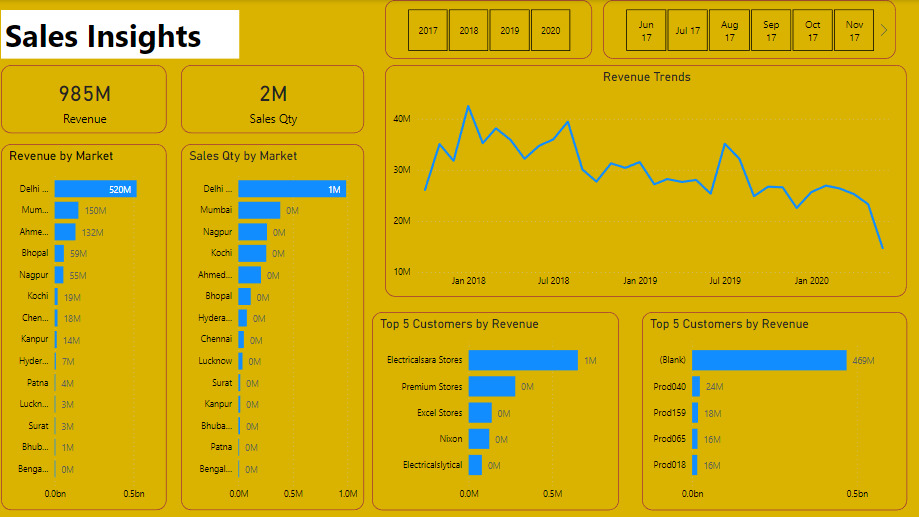

For this analysis, we collected data on employee turnover from the human resources database of
XYZ Company. The dataset includes information such as employee ID, department, job level,
salary, years of experience, performance ratings, and reasons for leaving. undertook a project
analyzing the reasons behind high employee turnover rates within an organization. Specifically,
I focused on why individuals were leaving their jobs and identified which department had the
highest number of departures. Through this project, I utilized various data analysis and
research techniques to gather insights and trends, which provided valuable information for
decision-makers in the organization to address and mitigate the turnover issue. Overall, this
project allowed me to showcase my analytical skills and ability to provide practical solutions
to complex organizational challenges.


In this project, I undertook a comprehensive analysis of IMDB movie ratings from 2006 to 2016.
The objective was
to gain insights into the trends and patterns of movie ratings over the course of a decade,
providing valuable information for filmmakers, production companies, and movie enthusiasts. To
conduct this analysis, I gathered data from the IMDb database, including movie titles, release
years, genres, ratings, and user reviews. The dataset consisted of over 10,000 movies released
between 2006 and 2016.

I conducted an in-depth analysis of the sales data for a company to uncover valuable insights and
provide actionable recommendations. The objective of this project was to help the company gain a
better understanding of its sales performance, identify trends, and optimize sales strategies to
drive growth and maximize revenue.
To conduct this analysis, I collected sales data from the company's databases, which included
information such as sales transactions, customer demographics, product details, pricing, and
promotional activities. The data covered a specific time period, typically ranging from months
to years, depending on the availability of data.